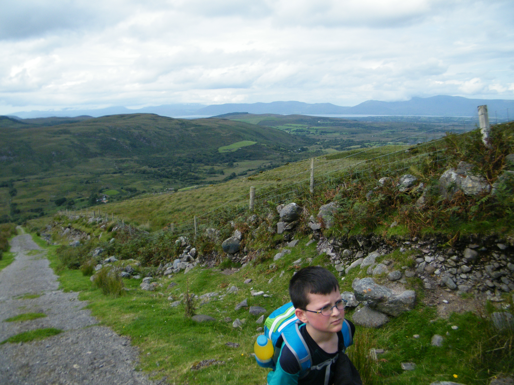

This mountain is on The Gribbon List, it will be part of the total metres for my Ten Thousand Metre Challenge, a fundraiser for Mountain Rescue Ireland, you can support by donating at High Point Ireland 10,000m Challenge 2017 fundraiser page.

map.
Ready for off.
Very steep Hydro road at the start.
Great views, spot Inch Strand.
Top of Hydro road, Lough Eighter, Carrauntoohil hiding in the cloud.
Lough Eighter and Cnoc Iochtair.
Start of Caher.
Inch Strand.
Gaining height, Coomlougha lough in view.
Caher West Top.
Lough Eagher.
Caher the third-highest mountain peak in Ireland, at 1,001 metres.
Looking back over the 3 lakes.
Second time to Irelands Highest Point #Carrauntoohil1039m.
Dad, me and Johnny, WE MADE IT!.
#Carrauntoohil1039m.
Hags Glen.
Beenkeragh Ireland's 2nd highest mountain, We will do it next time!.
I'm as tall as the Cross!.
Killarney below.
The Cross and Shelter.
Bye, until next time.
Double peaks of Caher.

Views for miles
Eye sight test, can you see the cross on Carrauntoohil.
Carrauntoohil and ridge to Beenkeragh.
Decending Caher again.

Lough Acoose.
Almost at the base of Caher.
Back at last.